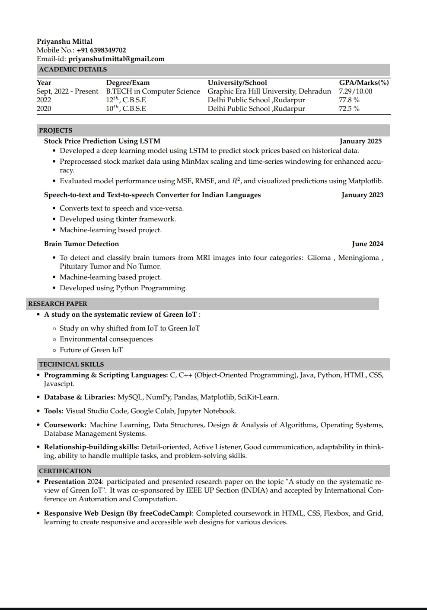

INTRODUCTION
RESUME
 View RESUMEPUBLIC SPEAKING
EXTEMPORE
In extempore, you have limited time to prepare. Train your mind to think rapidly and structure your points efficiently. A calm mind helps in delivering a clear and logical speech.
Always follow a simple structure: Introduction → Body → Conclusion. Start with a strong opening, present your arguments clearly, and end with a powerful conclusion.
Avoid using fillers like "umm" and "uhh." Be direct and precise in your speech. Using simple and impactful words keeps the audience engaged.
Speak with confidence, maintain eye contact, and use natural gestures. A strong voice and good posture make a lasting impression.
Staying updated with current affairs, social issues, and common debate topics helps you handle any given subject with ease. Reading newspapers and following trends is useful.
Use your time wisely. Don’t rush or drag your speech. Divide your thoughts logically within the given time to ensure smooth delivery.
The best way to improve is through regular practice. Try impromptu speaking exercises, record yourself, and refine your speech based on feedback.
JAM SESSION
In a JAM session, quick thinking and structured speech are crucial. You have only a minute to organize your thoughts and express them fluently. Avoid unnecessary pauses and hesitations to maintain engagement and make a strong impact.
Staying on topic is essential. Even if the given topic is unfamiliar, try to relate it to general knowledge or personal experiences. A well-connected speech makes you sound confident and prepared. Speaking fluently with clear pronunciation ensures better understanding. Avoid fillers like "uh," "umm," and "like," as they disrupt the flow and weaken your message.
Confidence and body language play a major role in making a good impression. Maintain eye contact, use natural hand gestures, and speak with enthusiasm. Your voice should be clear, assertive, and well-paced.
Since JAM sessions are time-bound, manage your time wisely—start with a strong introduction, present your key points effectively, and conclude within the given time limit.
Being aware of current affairs, trending topics, and general discussion themes helps in handling any JAM topic with ease.
Regular practice is the key to mastering JAM sessions. Try speaking on random topics, record yourself, and refine your speech for better clarity and engagement.